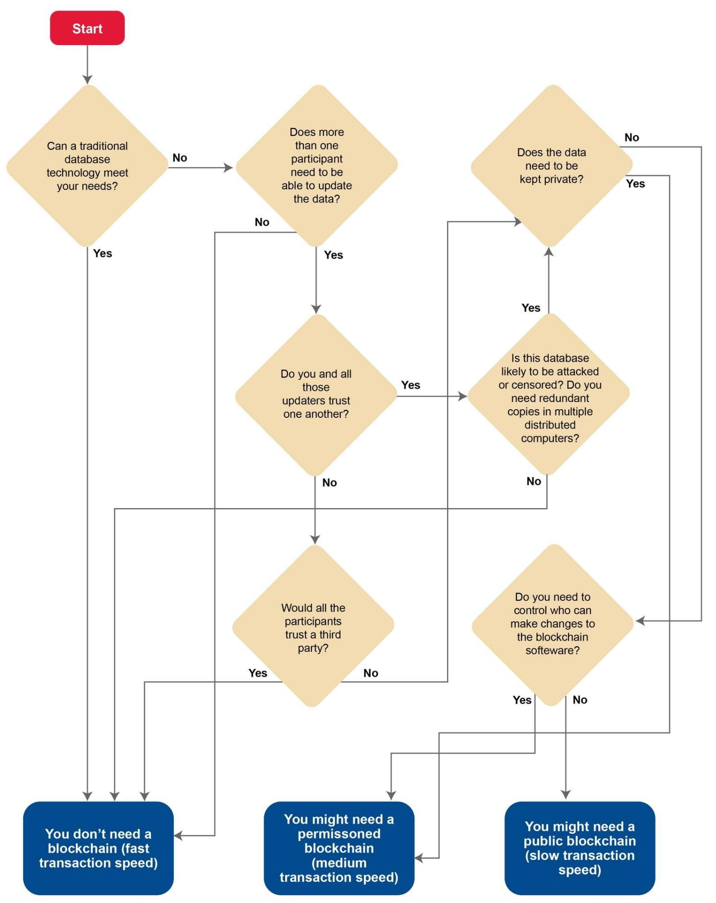
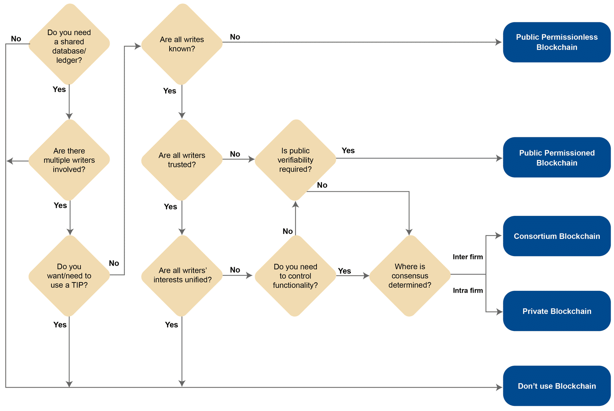

<!doctype html>
<html lang="en">
  <head>
    <meta charset="utf-8">

    <title>Blockchain Use Case Modelling - II</title>

    <meta name="author" content="Dhruvin Parikh">

    <meta name="apple-mobile-web-app-capable" content="yes" />
    <meta name="apple-mobile-web-app-status-bar-style" content="black-translucent" />

    <meta name="viewport" content="width=device-width, initial-scale=1.0, maximum-scale=1.0, user-scalable=no, minimal-ui">

    <link rel="stylesheet" href="../../reveal.js/css/reveal.css">
    <link rel="stylesheet" href="../../reveal.js/css/theme/black.css" id="theme">

    <!-- Code syntax highlighting -->
    <link rel="stylesheet" href="../../reveal.js/lib/css/zenburn.css">

    <!-- Printing and PDF exports -->
    <script>
      var link = document.createElement( 'link' );
      link.rel = 'stylesheet';
      link.type = 'text/css';
      link.href = window.location.search.match( /print-pdf/gi ) ? '../../reveal.js/css/print/pdf.css' : '../../reveal.js/css/print/paper.css';
      document.getElementsByTagName( 'head' )[0].appendChild( link );
    </script>
    <script src="./sha1.js"></script>

    <!--[if lt IE 9]>
    <script src="../reveal.js/lib/js/html5shiv.js"></script>
    <![endif]-->

    <style>
      .reveal .slides h1, .reveal .slides h2, .reveal .slides h3 {
        text-transform: none;
      }

      .two-column {
        display: flex;
        flex-wrap: wrap;
      }

      .two-column em {
        margin: 20px;
      }

      .reveal .big-and-bold {
        font-weight: bold;
        font-size: 135%;
      }

      .reveal .shrunk-a-bit {
        font-size: 90%;
      }

      .reveal .shrunk-a-bit pre {
        width: 100%;
      }

      .reveal pre {
        width: 100%;
      }

      .reveal .highlight {
        color: yellow;
        font-weight: bold;
      }

      .reveal .highlightRed {
        color: red;
        font-weight: bold;
      }
      .left {
        left:-8.33%;
        text-align: left;
        float: left;
        width:50%;
        z-index:-10;
      }

      .right {
        left:31.25%;
        top: 75px;
        text-align: left;
        float: right;
        z-index:-10;
        width:50%;
      }
    </style>
  </head>

  <body>
    <div class="reveal">
      <div class="slides">

<!------------------------------------------------------->


<section data-markdown><script type="text/template">

## CSBC 2000 - Essentials of Blockchain Development and Security

### Class 10: Blockchain Use Case Modelling - II

*Dhruvin Parikh*

</script></section>

<section data-markdown><script type="text/template">

## Recap

* When to/not to use blockchain
* Trust problem
* Modelling a trust problem as a blockchain use case
* Understanding market mechanisms

</script></section>


<section data-markdown><script type="text/template">

## Class Plan

* More use case modelling
* When to use public/private/consortium ledger
* Modelling from a technical perspective


</script></section>

<section data-markdown><script type="text/template">

## Revision

* **Secure Ledger** : single source of truth
* **Virtual Machine Interdependency** : Smart contract logic that defines the extent of what actors can do. Anything unsaid is undefined behavior
* **Tokens Aligning Incentives** : using staking/value to enforce good behavior and/or punish bad behavior


</script></section>

<section data-markdown><script type="text/template">

## Choosing between Public, Private and none



</script></section>


<section data-markdown><script type="text/template">

## Choosing between Public, Private and Consortium




</script></section>

<section data-markdown><script type="text/template">

## Modelling

* Modelling is the mapping of business concepts into technical concepts
* Models don't need to be complete (in fact are mathematically proven to not be so)
* Consist of the following


</script></section>

<section data-markdown><script type="text/template">

## Assets

* Assets are anything of value that is being transacted in the blockchain application
* Assets are typically scarce
 * Depends how you model
 * One possible model: once created, cannot be destroyed but only moved
 * E.g. NFTs
* Asset is the name of the data structure, attributes are its properties


</script></section>

<section data-markdown><script type="text/template">

## Assets

chaincode
```
const cars = [
    {
        color: 'blue',
        make: 'Toyota',
        model: 'Prius',
        owner: 'Tomoko',
    }
]
```
solidity
```
struct Voter {
  uint weight; // weight is accumulated by delegation
  bool voted;  // if true, that person already voted
  address delegate; // person delegated to
  uint vote;   // index of the voted proposal
}
```
</script></section>


<section data-markdown><script type="text/template">

## Contract

* Contracts are algorithms to modify an asset state.
* They are composed of several functions that fulfill biz requirements

```
async changeCarOwner(ctx, carNumber, newOwner) {
    const carAsBytes = await ctx.stub.getState(carNumber); // get the car from chaincode state
    If (!carAsBytes || carAsBytes.length === 0) {
        throw new Error(`${carNumber} does not exist`);
    }
    const car = JSON.parse(carAsBytes.toString());
    car.owner = newOwner;
    await ctx.stub.putState(carNumber, Buffer.from(JSON.stringify(car)));
}
```
</script></section>

<section data-markdown><script type="text/template">

## Contract

```
/// Give your vote (including votes delegated to you)
/// to proposal `proposals[proposal].name`.
function vote(uint proposal) public {
  Voter storage sender = voters[msg.sender];
  require(sender.weight != 0, "Has no right to vote");
  require(!sender.voted, "Already voted.");
  sender.voted = true;
  sender.vote = proposal;

  // If `proposal` is out of the range of the array,
  // this will throw automatically and revert all
  // changes.
  proposals[proposal].voteCount += sender.weight;
}
```
</script></section>


<section data-markdown><script type="text/template">

## Transactions

* Single invocations of smart contracts
* In other words, a transaction is an instantiation of a smart contract function intended to modify state by specific quantities (the function args)
* Goes in the block body


</script></section>

<section data-markdown><script type="text/template">

## Participants

* Users who will invoke smart contract functions to create transactions
* Have a unique identity represented by their address
* Will authorize transactions using PKI

</script></section>


<section data-markdown><script type="text/template">

## How to make a technical model: Asset

* Asset is always the starting point
* Blockchain solves the problem of trust for parties working together
 * Parties can be sure that other parties won't act maliciously toward assets

</script></section>


<section data-markdown><script type="text/template">

## How to make a technical model: Asset

* After identifying the asset, attributes can be identified
  * Escrow use case has other attributes than just the house
  * The attributes of the asset will determine the functionality of your transactions
  * Same principle as OOP

</script></section>

<section data-markdown><script type="text/template">

## How to make a technical model: Transaction

* Once you have your asset and its attributes defined, you can define the actions that you want your participants to take

</script></section>

<section data-markdown><script type="text/template">

## How to make a technical model: Transaction

* Again, just like OOP
  * Have your view functions and your modification functions
  * Your business requirements will heavily dictate this part
  * This is where you must make sure to have the smart contract security covered


</script></section>

<section data-markdown><script type="text/template">

## How to make a technical model: Business Net

* In private blockchain, organizations in the business network map to peers or nodes in a technical network
* Every peer or node in the blockchain network contains a copy of the ledger
* No restriction on the number of nodes an organization can host (since tx consensus is endorsement based)

</script></section>


<section data-markdown><script type="text/template">

## How to make a technical model: Business Net

* Smaller organizations or individuals may delegate the responsibility of hosting peers to another larger organization in the network
* E.g. Pharma company labs


</script></section>

<section data-markdown><script type="text/template">

## How to make a technical model: Users

* If your use case is public, users you want to participate should be able to invoke the right smart contract functions, e.g. ride share
* Can also think of it as the right role you want them to play
* In private blockchains, this is baked in by design as you are operating based on the existing hierarchy of an organization

</script></section>

<section data-markdown><script type="text/template">

## How to make a technical model: Users

* Consortium blockchains need to have the governing member roles defined, which is external (to the blockchain) and can be changed by voting

</script></section>

<section data-markdown><script type="text/template">
## 15 minute break
</script></section>


<section data-markdown><script type="text/template">
## Commercial Paper Example
* Let us take a look in moodle

</script></section>

<section data-markdown><script type="text/template">
## Class Activity

* Breakout into groups of 4 or 5
* Time : 1 hour
* Start modelling a business use case
 * **Business Case** : define application
 * **Participants** : stakeholder of application
 * **Assets** : item transacted in application
 * **Transactions** : function that transition state of application
* Present your solution in the class
</script></section>


<section data-markdown><script type="text/template">

## References

* [Types of blockchains](https://devopedia.org/types-of-blockchains)
* [Commercial Paper sample](https://github.com/hyperledger/fabric-samples/tree/master/commercial-paper)

</script></section>

<section data-markdown><script type="text/template">

## End of Class

</script></section>


<!------------------------------------------------------->


      </div>

    </div>

    <script src="../../reveal.js/lib/js/head.min.js"></script>
    <script src="../../reveal.js/js/reveal.js"></script>
    <script src="../../reveal.js/plugin/zoom-js/zoom.js"></script>

    <script>

      // Full list of configuration options available at:
      // https://github.com/hakimel/reveal.js#configuration
      Reveal.initialize({
        controls: true,
        progress: true,
        history: true,
        center: true,

        transition: 'none', // none/fade/slide/convex/concave/zoom

	math: {
          mathjax: '../../lib/MathJax/MathJax.js',
          config: 'TeX-AMS_SVG-full',
	},

        // Optional reveal.js plugins
        dependencies: [
          { src: '../../reveal.js/plugin/markdown/marked.js', condition: function() { return !!document.querySelector( '[data-markdown]' ); } },
          { src: '../../reveal.js/plugin/markdown/markdown.js', condition: function() { return !!document.querySelector( '[data-markdown]' ); } },
          { src: '../../reveal.js/plugin/highlight/highlight.js', async: true, callback: function() { hljs.initHighlightingOnLoad(); } },
          { src: '../../reveal.js/plugin/math/math.js', async: true }
        ]
      });

    </script>

  </body>
</html>